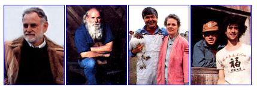
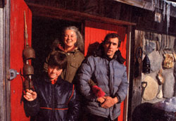

Home
Between Swiss Family Robinson and Davey Croketts.
No two persons embodied the back-to-the-land ethic more perfectly in the '60s and'70s than Helen and Scott Nearing. Their example and their books and articles onrural self-sufficiency inspired thousands of mostly young city dwellers to forego urban life and to attempt various degrees ofhomesteading, from communal to ruggedly independent. Dennis and Polly Joos number among the latter (they were first reported on inMOTHERNo. 26) and are still at it. The following account is excerpted from correspondence between Dennis Joos andMother Earth Newseditor Terry Krautwurst.
In March of '73, Polly and I made the holy pilgrimage to visit the Nearings. We went for their blessing and some advice. Moslems go to Mecca; we went to Maine.
Helen and Scott immediately put us to work. If we wanted advice we were going to earn it.
When I announced that Polly and I were going to build a stone house, Helen just stared. Her eyes said, "I've heard that a million times but I haven't seen many stone houses."
But we owned 20 acres in northern New Hampshire and had already collected 20 or 30 rocks, I told her. Her doubts persisted. Nevertheless, we were full of enthusiasm. So, in April, we quit our jobs, tucked our piggy banks in the back of the truck and headed north. I envisioned ourselves as part Swiss Family Robinson, part Davy Crockett. We would be brave pioneers, living in a lean-to while battling wild animals, insects and starvation. It would be tough but romantic.
I asked my father if I could borrow his old German rifle. "Coy dogs," I told him. "They've got coy dogs up there. Coyotes! They hunt in packs and kill animals and probably try to attack people. I need a gun."
My father probably wondered what happened to the nonviolence I had been preaching a few weeks before. He snorted and changed the subject.
A few days later I forgot about the gun and the lean-to. Polly's father "just happened" to buy a 22-foot camping trailer and loaned it to us for the summer. Mr. and Mrs. Davy Crockett tame the wild in their camping trailer.
The summer of '73 was a glorious time for us. We were delighted to be working for ourselves. We used to joke about being unemployed, unmarried, uninsured and pregnant, but it was the first time either of us had felt such an intense sense of freedom. We grinned all summer.
Many of our relatives thought we were absolutely insane, and perhaps we were. Polly had had a malignant tumor in her hip when she was a teenager and the doctors had zapped her with a megadose of cobalt radiation. Yet, here she was mixing concrete by hand in a wheelbarrow.
Some people suspected that I was a bad influence on her, as if I had dragged her away from civilization and made her work like an animal. That wasn't true; everything we did resulted from a joint decision. We both work outside; we both work inside.
But equality has to work both ways. Usually, equality on a farm means that the wife must do all the housework and then go to the barn and help with the chores. She's the maid inside the house and the servant in the barn. We wanted none of that. We have each developed our own niches, but it would be hard to label them as male or female jobs. For instance, I do all the canning and Polly pulls the stumps. It works for us.
We finished the shell of our small house two weeks before Polly's due date (she had a C-section because of her hip). It wasn't a wonderful, perfect house, but it seemed that way because it was ours.
When Aaron was born, we spent the first winter in the camping trailer because the inside of the house was unfinished. By December we were snowed in, at the end of an unplowed road. Northern New Hampshire is not like southern New Hampshire. Northern New Hampshire has Zone 3 weather, like northern Minnesota or North Dakota. We see 30° below at least three times a winter.
Each year since that first summer, we have done something to the place; added a new building, cleared more land or made necessary repairs. The problem with living in the woods is that there is so much to know. A homesteader should be a carpenter, mason, electrician, mechanic, botanist, nutritionist, doctor-and a few other things. We've never really known as much as we should have.
Each year, though, we make a little headway. I think some people's idea of life on the homestead is one of total relaxation and lack of stress. They figure we spend our winters in front of the fireplace, reading the classics.
We don't. We're outside every day, even when it's below zero, working in the garage or doing some damned thing. We have become workaholics at home. Still, it gives us great pleasure to work in the garden or cut up some wood.
At this point in our lives we have reached a point of equilibrium. Aaron is in the seventh grade in a two-room school, Polly works three days a week as a speech therapist, and I work three days as a printer. We can survive on these two part-time jobs because we have no mortgage, no electric bills, no car payments, and we make the most of our large, well-weeded garden.
Our wood cookstove is the heart of the house. It keeps us warm, cooks our food, heats the water and warms Polly's hot tub.
Electricity is a problem we have never satisfactorily solved. Our house is wired for a 12-volt system, and we can run the house off the car or a bank of batteries. We use RVtype lights all over the house, but we don't waste them. This house will never be confused with Times Square.
So, what does the future hold? Will we be here in another 13 years? I don't know. Sometimes when it snows in May or October we think we would like to move to a warmer, sunnier place, but I don't know if we ever will. Our souls, you see, are sunk into the place.
|
 Dennis, Polly and son Aaron on their homestead, which they have named the ""Jellystone Wild Game Preserve."" |
 |
|